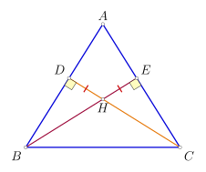
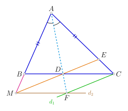

HỌP CHUYÊN MÔN KHỐI 7
Tháng 9 - 2026
Tháng 9 - 2026
Kế hoạch phân phối chương trình Tháng 9 & Tháng 10 theo từng cấp độ lớp.
Đánh giá các lỗi về phiếu bài và những tồn tại trong công tác giảng dạy.
Lưu ý công tác coi thi, chấm điểm và hướng dẫn nhận xét khảo sát Quý I.
Chuyên đề Tam giác bằng nhau, Tỉ lệ thức và phân tích các ngộ nhận hình học.
| Thời gian | Buổi học | Định hướng chuyên | Nâng cao | Mở rộng & Cơ bản | |
|---|---|---|---|---|---|
| Tháng 9 | 03/09 - 09/09 | 9 | Giá trị tuyệt đối của một số thực | Giá trị tuyệt đối của một số thực | Giá trị tuyệt đối của một số thực |
| 10/09 - 16/09 | 10 | Trường hợp bằng nhau thứ nhất và thứ hai của tam giác | Trường hợp bằng nhau thứ nhất và thứ hai của tam giác | Tổng ba góc trong 1 tam giác | |
| 17/09 - 23/09 | 11 | Trường hợp bằng nhau thứ hai và thứ ba của tam giác | Trường hợp bằng nhau thứ hai và thứ ba của tam giác | Ôn tập tổng hợp | |
| 24/09 - 30/09 | 12 | Kiểm tra quý 1 | Kiểm tra quý 1 | Kiểm tra quý 1 | |
| Tháng 10 | 01/10 - 07/10 | 13 | Các bài toán về chia hết với số nguyên | Các bài toán về chia hết với số nguyên | Hai tam giác bằng nhau. Trường hợp bằng nhau thứ nhất |
| 08/10 - 14/10 | 14 | Các bài toán về số nguyên tố | Các bài toán về số nguyên tố | Trường hợp bằng nhau thứ hai | |
| 15/10 - 21/10 | 15 | Tam giác cân, Tam giác đều | Tam giác cân, Tam giác đều | Trường hợp bằng nhau thứ ba của tam giác | |
| 22/10 - 28/10 | 16 | Luyện tập tam giác cân, tam giác đều | Luyện tập tam giác cân, tam giác đều | Tỉ lệ thức - TC dãy tỉ số bằng nhau (buổi 1) | |
| 29/10 - 04/11 | 17 | Ôn tập và kiểm tra tháng | Ôn tập và kiểm tra tháng | Tỉ lệ thức - TC dãy tỉ số bằng nhau (buổi 2) | |
Chương trình trong 2 tháng tới sẽ tập trung vào các chuyên đề: Giá trị tuyệt đối của số thực, Tam giác bằng nhau, Tam giác cân & tam giác đều, Tỉ lệ thức và Tính chất dãy tỉ số bằng nhau bám sát định hướng của từng mức độ phân lớp.
Giáo viên coi thi chưa chặt, còn sử dụng điện thoại thời gian dài trong quá trình coi thi.
| Dạng bài | Nội dung nhận xét |
|---|---|
|
Con vận dụng tốt:
Các dạng bài toán tính hợp lí; quy tắc phá dấu giá trị tuyệt đối và các phép toán cộng, trừ, nhân, chia số hữu tỉ để tìm x. Giải bài toán có lời văn (sử dụng tính chất của dãy tỉ số bằng nhau). Con cần ôn tập thêm: Các dạng bài nâng cao sử dụng tính chất tỉ lệ thức và tính chất chia hết trong tập hợp số nguyên. |
Dạng 1: Chứng minh tam giác bằng nhau, chứng minh cạnh, góc bằng nhau.
Cho hình bên.
a) Chứng minh $\Delta HDB = \Delta HEC$;
b) Chứng minh $\widehat{DBH} = \widehat{ECH}$.

a) Xét $\Delta HDB$ và $\Delta HEC$ có:
$\quad \widehat{HDB} = \widehat{HEC} = 90^\circ$
$\quad HD = HE$
$\quad \widehat{BHD} = \widehat{CHE}$ (2 góc đối đỉnh)
Vậy $\Delta HDB = \Delta HEC$ (g.c.g) (đpcm)
b) Vì $\Delta HDB = \Delta HEC$ (cmt)
Nên $\widehat{DBH} = \widehat{ECH}$ (2 góc tương ứng) (đpcm).
Cho $\Delta ABC$ ($AB < AC$). Tia phân giác của góc $\widehat{BAC}$ cắt cạnh $BC$ tại $D$. Trên cạnh $AC$ lấy điểm $E$ sao cho $AE = AB$. Tia $AB$ và $ED$ cắt nhau tại $M$.
a) Chứng minh $\Delta ABD = \Delta AED$; $\quad$ b) Chứng minh $\Delta BDM = \Delta EDC$;
c) Gọi $d_1$ là đường thẳng đi qua $C$ và song song với $ED$, $d_2$ là đường thẳng đi qua $M$ và song song với $BC$. Hai đường thẳng $d_1$ và $d_2$ cắt nhau tại $F$. Chứng minh 3 điểm $A, D, F$ thẳng hàng.

Chứng minh $\Delta DFM = \Delta FDC$ ($g-c-g$) nên từ đó chứng minh được $MF = FC (= DC = MD)$ sau đó chứng minh $\Delta AMF = \Delta ACF$ ($c-g-c$) nên $AF$ là tia phân giác $\widehat{MAC}$ mà $AD$ là tia phân giác $\widehat{MAC}$ suy ra $A, D, F$ thẳng hàng.
Giáo viên hướng dẫn học sinh theo hướng:
Chứng minh: $\widehat{ADM} = \widehat{ADC}$ rồi suy ra $\widehat{MDF} = \widehat{CDF}$ (kề bù với $\widehat{ADM}$ và $\widehat{ADC}$).
Suy ra $\Delta MDF = \Delta CDF$ ($c-g-c$) nên $MF = CF$, chứng minh được $AM = AC$ từ đó suy ra $\Delta AMF = \Delta ACF$ ($c-g-c$) nên $AF$ là phân giác $\widehat{MAC}$ mà $AD$ là phân giác suy ra $A, D, F$ thẳng hàng.
Đây là sự ngộ nhận điểm thẳng hàng trước khi chứng minh!
Cho tỉ lệ thức $\dfrac{a}{b} = \dfrac{c}{d}$. Chứng minh rằng ta có các tỉ lệ thức:
a) $\dfrac{a+b}{b} = \dfrac{c+d}{d}$; $\quad$ b) $\dfrac{5a+3b}{3a-7b} = \dfrac{5c+3d}{3c-7d}$; $\quad$ c) $\dfrac{a^2}{b^2} = \dfrac{c^2}{d^2} = \dfrac{ac}{bd}$.
a) Ta có $\dfrac{a}{b} = \dfrac{c}{d}$ hay $\dfrac{a}{c} = \dfrac{b}{d}$. Áp dụng tính chất dãy tỉ số bằng nhau, ta có: $\dfrac{a}{c} = \dfrac{b}{d} = \dfrac{a+b}{c+d}$. Suy ra $\dfrac{a+b}{b} = \dfrac{c+d}{d}$ (Đpcm)
b) Áp dụng tính chất dãy tỉ số bằng nhau, ta có: $\dfrac{a}{c} = \dfrac{b}{d} = \dfrac{5a+3b}{5c+3d} = \dfrac{3a-7b}{3c-7d}$. Suy ra $\dfrac{5a+3b}{3a-7b} = \dfrac{5c+3d}{3c-7d}$ (Đpcm)
c) Áp dụng tính chất dãy tỉ số bằng nhau, ta có: $\dfrac{a}{b} = \dfrac{c}{d}$ nên $\left(\dfrac{a}{b}\right)^2 = \left(\dfrac{c}{d}\right)^2 = \dfrac{c}{d} \cdot \dfrac{c}{d} = \dfrac{a}{b} \cdot \dfrac{c}{d}$. Suy ra $\dfrac{a^2}{b^2} = \dfrac{c^2}{d^2} = \dfrac{ac}{bd}$ (Đpcm)
a) $\dfrac{x}{3} = \dfrac{y}{5}$ và $x+y=16$; $\quad$ b) $4x=3y$ và $x-y=11$.
* GV giới thiệu thêm phương pháp đặt hằng số k
a) $\dfrac{x}{3} = \dfrac{y}{5} = \dfrac{x+y}{3+5} = \dfrac{16}{8} = 2$.
Suy ra $x = 2 \cdot 3 = 6$, $y = 2 \cdot 5 = 10$. Vậy $(x;y) = (6;10)$.
b) $4x=3y \Rightarrow \dfrac{x}{3} = \dfrac{y}{4} = \dfrac{x-y}{3-4} = \dfrac{11}{-1} = -11$.
Suy ra $x = -11 \cdot 3 = -33$, $y = -11 \cdot 4 = -44$. Vậy $(x;y) = (-33;-44)$.
c) $\dfrac{x}{4} = \dfrac{y}{7}$ và $x^2-y^2=-33$; $\quad$ d) $\dfrac{x}{4} = \dfrac{y}{3} = \dfrac{z}{2}$ và $xyz = -648$.
c) $\dfrac{x}{4} = \dfrac{y}{7} \Rightarrow \dfrac{x^2}{16} = \dfrac{y^2}{49} = \dfrac{x^2-y^2}{16-49} = \dfrac{-33}{-33} = 1$.
Suy ra $x^2=16 \Rightarrow x=\pm 4$, $y^2=49 \Rightarrow y=\pm 7$.
Vì $x, y$ cùng dấu $\Rightarrow (x;y) \in \{(4;7); (-4;-7)\}$.
d) Đặt $\dfrac{x}{4} = \dfrac{y}{3} = \dfrac{z}{2} = k \Rightarrow x=4k, y=3k, z=2k$.
$xyz = -648 \Rightarrow 24k^3 = -648 \Rightarrow k^3 = -27 \Rightarrow k = -3$.
Suy ra $x = -12, y = -9, z = -6$. Vậy $(x;y;z) = (-12;-9;-6)$.
Cho dãy tỉ số bằng nhau: $\dfrac{a_1}{a_2} = \dfrac{a_2}{a_3} = \dots = \dfrac{a_{2019}}{a_{2020}} = \dfrac{a_{2020}}{a_1}$
Tính giá trị biểu thức $B = \dfrac{(a_1+a_2+\dots+a_{2020})^2}{a_1^2+a_2^2+a_3^2+\dots+a_{2020}^2}$
Trường hợp 1: $a_1+a_2+a_3+\dots+a_{2020} \neq 0$
Áp dụng tính chất dãy tỉ số bằng nhau ta có:
$\dfrac{a_1}{a_2} = \dfrac{a_2}{a_3} = \dots = \dfrac{a_{2019}}{a_{2020}} = \dfrac{a_{2020}}{a_1} = \dfrac{a_1+a_2+\dots+a_{2019}+a_{2020}}{a_2+a_3+\dots+a_{2020}+a_1} = 1$
Suy ra $a_1 = a_2 = a_3 = \dots = a_{2020}$.
Khi đó: $B = \dfrac{(2020a_1)^2}{2020 \cdot a_1^2} = 2020$.
Trường hợp 2: $a_1+a_2+a_3+\dots+a_{2020} = 0$
Khi đó $B = 0$.
Bộ phận Chuyên môn luôn sẵn sàng lắng nghe những chia sẻ, khó khăn thực tế và đóng góp quý báu từ các Thầy Cô để công tác giảng dạy ngày càng hoàn thiện và hiệu quả hơn.
Chúc các thầy cô một năm học mới làm việc hiệu quả và tràn đầy năng lượng.